<<夢>>
せっかくなら
最強の鉱山PKになれと。
OSIから色々もらった。
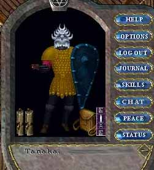
本来なら、へたれ装備でなんちゃってPKで行きたかったのだが
今や、ちょっとした廃人なら誰でもAFのひとつやふたつ持っている。
PvPerなら常識である。
私のような人間でも持っていいのではないだろうか。
だが、こんな装備で鉱山PKをして面白いのだろうか。
ちょっと反撃に合うと慌てふためくっていうのが
本来の鉱山PKの姿ではないだろうか。
しかし、そんな理性はこんな装備を得た時には
何も考えられなかった。
ただ、酔っていたかった。
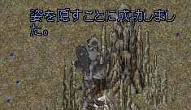
私は鬼装備でいつものように
待ち伏せし。
PKKでも何でもこいやー。
汚れきった心に気づかずに醜い顔で笑っていた。
しかし。
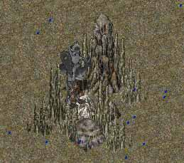
誰も来なかった。
私は
誰も来なかったことに安心している自分に気づいた。
装備を下さったOSIさん。
本当に嬉しかったですけど。
やっぱり、いらないです。
ここ。
堀師さん、いないみたいですから。
そして日常へ。
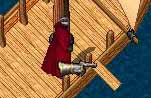
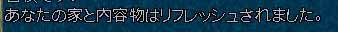
「あー装備ほしーなー」
と愚痴りながら
船という名の家を掃除し
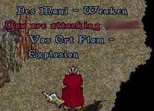
逃げられ
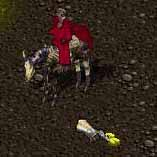
地面に落ちていた焼き魚をほおばり。
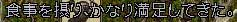
心の満腹を得ようと
歩き回り
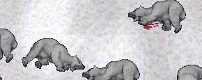
皮を集めている戦士に
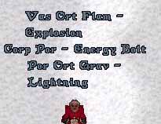
得意げに魔法を打った。
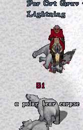
タゲ違う。（戦士さんRO済）
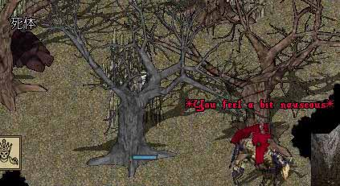
堀師さんのかわりに木のおばけ鬼沸きしてて、瀕死になりながら
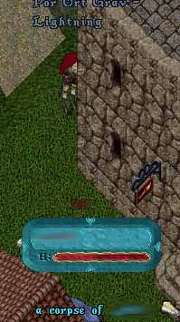
やっとゲットした人は保険金０、秘薬持ってない。
Pitに空ビン、ワンド拾いに行くと
「日記読んでますよ。」
と初めて言われた。
嬉しかった。
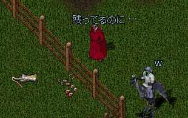
「たまに2チャージくらい残ってるのに・・」
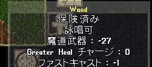
「本当に貧乏なんですね。」
その言葉はいらなかった。
あと、この方に聞いたんですけど
北斗PvPerの上級者の方が、このHP見て
「殺しにいこー♪」と探しているそうですが
辞めて下さい。
こっちは必死なんです。
もう、そんな話聞くと銀行残高チェックが激しくなるじゃないですか。
そうだ。
ステキなことを忘れていた。
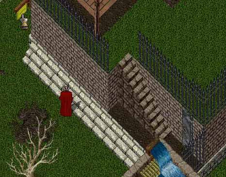
散歩の途中で見つけた
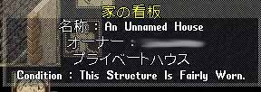
祭りの予感。
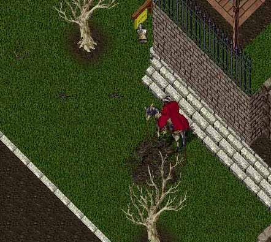
こまめに通ったつもりだったが
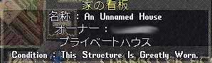
気づけば
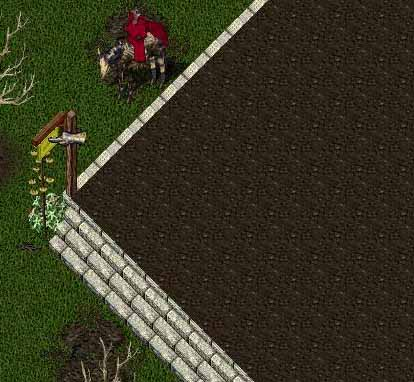
もう祭りは終了していた。
今日はもうだめだ。
最後に鉱山一巡りして寝よう。
そう思い、鉱山を巡ると
いた。
しかし、ガード圏内に逃げられてしまった。
こうなると手出しは出来ない。
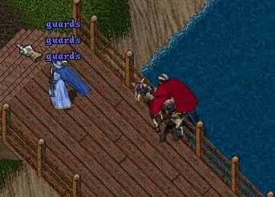
しかし。
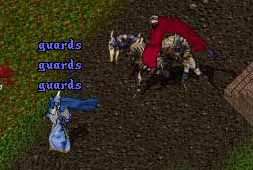
この方、PKがガード圏内に入れるようになったことを知らないようだ。
（フラグさえ立てなければガード死はしない）
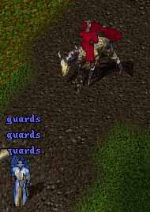
ガードを連呼する掘師さんの姿を見て
心の乾きが潤うのを感じる。
こ、これだ！！
この慌てふためき、ガードを必死に呼ぶ姿。
これこそが、鉱山PKの醍醐味ではないだろうか。
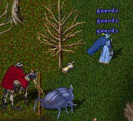
あひゃひゃ
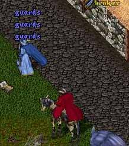
あひゃひゃひゃひゃひゃ
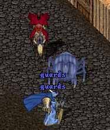
（←興奮しすぎてお面落ちてる）
アヒャヒャひゃひゃひゃはやはやひゃはひゃｈｙた！！
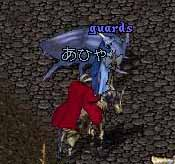
ついに、掘師さんは立ち止まった。
私は彼女の口から、どんな言葉が出るのか
唾を飲み、耳を傾けた。
「どうして、ガードが来ないの！？」
「殺さないで！！」
そんな言葉だろうか。
私の心はどんどんと鉱山PKとしての血が沸騰していた。
そして彼女はゆっくりと口を開いた。
「なんですか？」
あまりにも衝撃的な言葉でSSすら撮るのを忘れた。
さっきまで、あれほど髪を振り乱しながら「ガード！」と連呼していた人間味は
一気にNPC。
私は返す言葉も見つからず
やっとのことで思いついた返答が
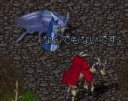
私は何を求めているんだろう。
私は何がしたかったのだろう。
私は何になりたいのだろう。
結 論
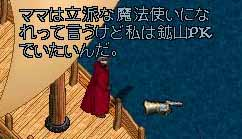
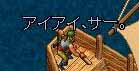
おしまい。